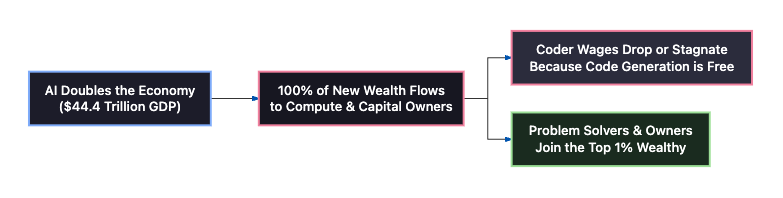
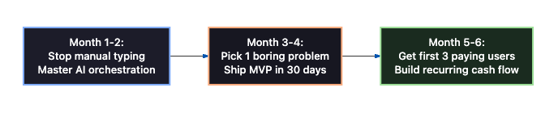

Coding is Dying. What Comes Next?
A reality check and wealth playbook for software engineers with 4–8 years of experience
1. The Reality Nobody Wants to Admit
If you are between 25 and 32 years old and have spent the last 4 to 8 years in tech, you have probably felt a quiet shift in the air.
LinkedIn influencers keep repeating: “AI is just a tool, it won’t replace you.”
Meanwhile, inside real companies:
- Hiring freezes are spreading quietly.
- Team sizes are shrinking instead of growing.
- Features that once took a full team two weeks to deliver are now built and deployed by a single autonomous AI agent before lunch.
In September 2026, Anthropic (the company behind Claude) published a landmark economic study titled “Scenarios for our Economic Future” (along with their technical report, “Economic Scenarios for Transformative AI”), reviewed by top labor economists at MIT and Stanford.
The headlines praised economic growth: US GDP surging to $44.4 Trillion and the economy doubling every 4.5 years.
But inside the numbers sits a brutal reality for anyone who writes code for a living:

What Anthropic’s Study Actually Proves:
- The Cost of Writing Code Has Collapsed to Zero: When an AI agent can write, test, and containerize a feature for $0.02 in 8 seconds, no business will keep paying high salaries just to type syntax by hand.
- The “Frozen Wage” Trap: Even though the economy grows by an extra $11 Trillion, the total salary pool paid to all 160 million workers stays flat at $20 Trillion. All the new wealth flows to owners of capital, compute, and equity.
- The Danger Zone: If your daily work is writing CRUD APIs, styling UI components, and writing basic unit tests, you are in the single most vulnerable position in tech.
2. The Trap: The “Everyone is Going Through This” Mindset
When things get difficult, 90% of developers fall into a comfortable trap:
- “The market is bad everywhere, what can we do?”
- “Let me grind 200 more LeetCode problems.”
- “Let me learn another JavaScript framework.”
This is the equivalent of a carriage driver in 1910 saying: “Cars are here, so I should train my horses to run slightly faster.”
Syntax is no longer a moat.
AI can write syntax faster, cleaner, and without fatigue. But that does not mean engineering is dead. It means your job description has changed forever.
3. How to Enter the Top 1%: The Wealth Playbook
You cannot save your way to the top 1% on a salary when the labor share is shrinking. Wealth comes from ownership, leverage, and asymmetric upside.
Here are the three realistic paths you can take right now:
Path 1: The One-Person Micro-SaaS (Global Cash Flow)
- Avoid crowded consumer apps that Silicon Valley chases.
- Find boring, painful business workflows where small companies are drowning in manual paperwork (e.g., freight document compliance, dental claim verification, subcontractor billing).
- The Math: Just 100 business customers paying $50 to $100/month = $5,000 to $10,000/month in 90%+ profit margin.
- With AI agents, you alone can handle product development, marketing pages, customer support, and bug fixes.
Path 2: The AI Automation Partner (Traditional Businesses)
- Most traditional companies (logistics, manufacturing, regional distributors, medical clinics) have zero in-house tech talent.
- Thirty people in their offices spend all day copy-pasting data between emails, PDFs, and spreadsheets.
- Build custom agentic workflows that cut their processing time by 80%.
- Charge a monthly retainer of $1,000 to $3,000 or negotiate a share of the costs you save them. Three clients give you complete financial independence.
Path 3: The High-Value AI Systems Architect (If Staying in a Job)
If you want to keep your day job, move away from general full-stack coding and specialize in what matters:
- Model Context Protocol (MCP): Connecting AI models securely to enterprise databases, tools, and internal systems.
- Production Evals: Anyone can build an AI demo that works 80% of the time. The highest-paid engineers are the ones who build automated evaluation pipelines to guarantee 99.5% accuracy in production.
4. The 6-Month Action Plan
No complicated theories. Here is what to do starting this week:

- Step 1: Stop Typing Boilerplate Code Manually. Use tools like Claude Code or Cursor as your junior developers. Your real job is system architecture, data flow, and code review.
- Step 2: Protect Your Morning Hours. Spend 60 to 90 minutes every morning (before your day job starts) working exclusively on your own software, tools, or learning. Never give your highest-energy hours solely to your employer.
- Step 3: Learn Distribution. Building software is now only 20% of the game; getting it into users’ hands is 80%. Talk directly to potential users on LinkedIn, X, or email before writing a single line of code.
- Step 4: Reinvest Cash Flow into Real Assets. Do not inflate your lifestyle. Take your cash flow and compound it in productive assets: index funds, tech equities, and cash reserves.
Conclusion: Don’t Be a Victim. Be a Builder.
Over the next three years, the tech community will split into two distinct groups:
- The Complainers: Those who spend their evenings mourning the golden days when a developer could make a high salary just for pushing three pull requests a week.
- The Sovereign Builders: Those who realize that an individual software engineer now possesses more leverage than entire companies did ten years ago.
What once took ten engineers and two million dollars can now be built by one senior developer with strong taste, sharp problem-solving, and a fleet of AI agents.
You have spent years mastering technology. Put down the syntax, start orchestrating systems, and build your own future.
Related reading
- How Cursor Router picks the right model — routing cheap vs frontier models under a budget
- Cheap intelligence, expensive trust — DeepSeek, GLM & Kimi vs Claude and OpenAI
- AI-native engineering on my homepage — agents, RAG, MCP, and production stack
- Get in touch to discuss agentic systems, consulting, or engineering advisory